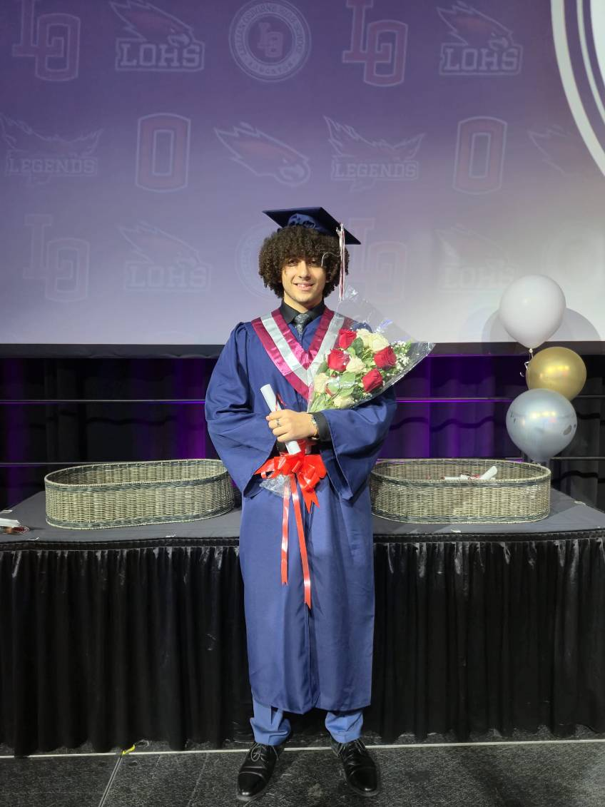
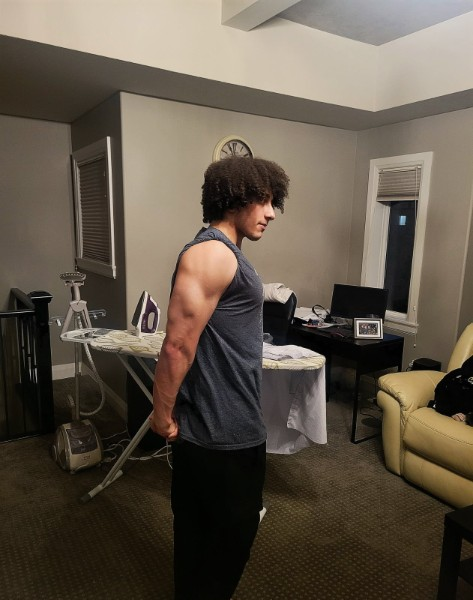
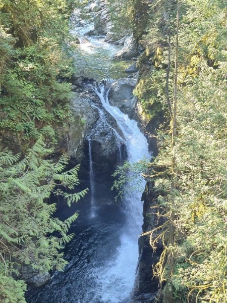
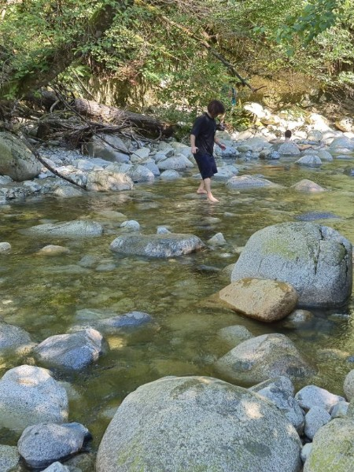

Apr 2023 — Present
Pharmacy Assistant
Shepherd Pharmacy
Execute daily operations and communicate effectively with team members and clients. Manage time efficiently under high-pressure conditions to meet set targets.
Mechanical Engineering Student · Edmonton, AB
I’m Andrew — a dedicated engineering student who enjoys solving problems, learning quickly, and building a meaningful life along the way.

A little about me
I was born in the United Arab Emirates and moved to Canada when I was seven. After starting out in New Brunswick, my family eventually made Edmonton home.
I went through French immersion for six years and continue to speak and read French at an intermediate level. My experiences have taught me patience, hard work, and the value of making the most of every opportunity.
Experience
Shepherd Pharmacy
Execute daily operations and communicate effectively with team members and clients. Manage time efficiently under high-pressure conditions to meet set targets.
St. Mary and St. Mark Coptic Orthodox Church
Work weekly with third-grade children, teaching lessons and creating an engaging, supportive environment.
Education
Expected graduation · April 2029
University of Alberta · Edmonton, AB
Second-year student with a strong foundation in mechanics, multivariable calculus, engineering graphics, and computer programming.
What I bring
Approach challenges analytically and look for practical solutions.
Adapt to new concepts, environments, and responsibilities.
Manage competing priorities and follow through on commitments.
Beyond the CV
Outside school, I enjoy training, exploring the outdoors, playing guitar, and playing video games.



Get in touch
Whether you’d like to talk engineering, opportunities, or just say hello, I’d be happy to hear from you.